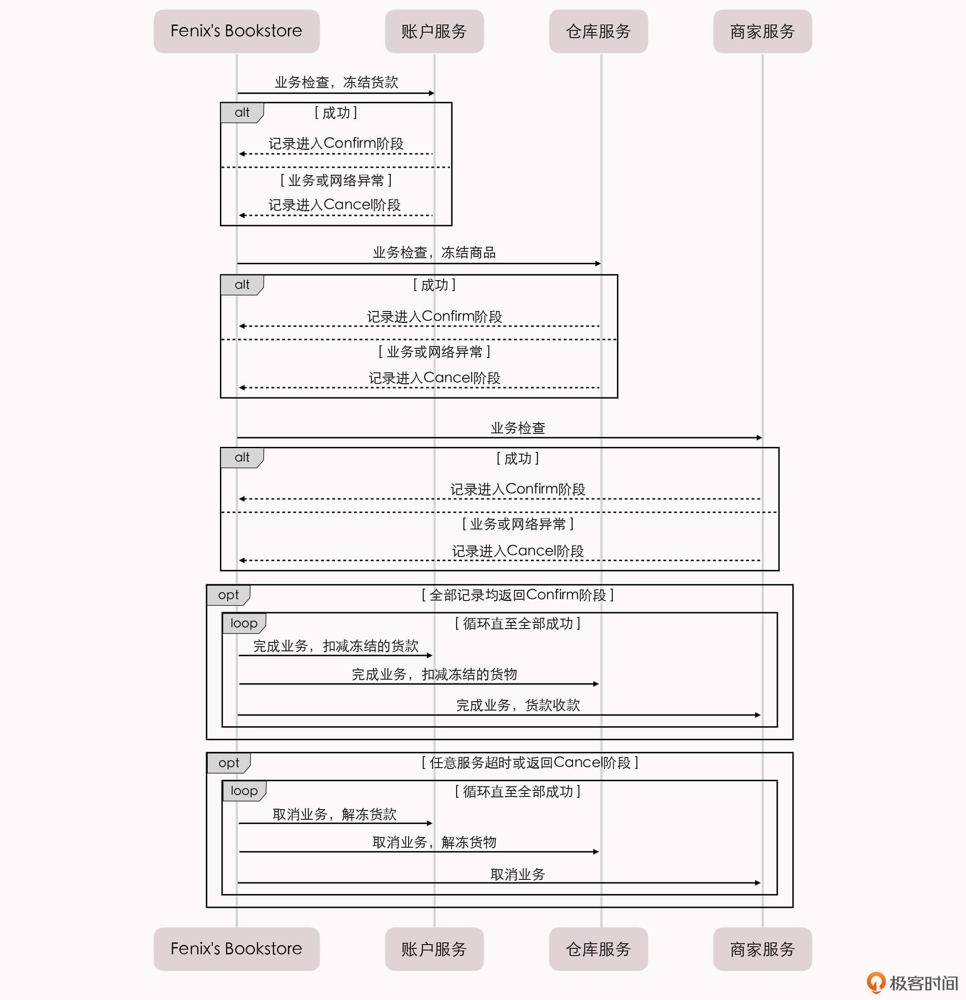

- 00 _导读 _ 什么是“The Fenix Project”？.md
- 00 开篇词 _ 如何构建一个可靠的分布式系统？.md
- 01 _ 原始分布式时代：Unix设计哲学下的服务探索.md
- 02 _ 单体系统时代：应用最广泛的架构风格.md
- 03 _ SOA时代：成功理论与失败实践.md
- 04 _ 微服务时代：SOA的革命者.md
- 05 _ 后微服务时代：跨越软件与硬件之间的界限.md
- 06 _ 无服务时代：“不分布式”云端系统的起点.md
- 07 _ 远程服务调用（上）：从本地方法到远程方法的桥梁.md
- 08 _ 远程服务调用（下）：如何选择适合自己的RPC框架？.md
- 09 _ RESTful服务（上）：从面向过程编程到面向资源编程.md
- 10 _ RESTful服务（下）：如何评价服务是否RESTful？.md
- 11 _ 本地事务如何实现原子性和持久性？.md
- 12 _ 本地事务如何实现隔离性？.md
- 13 _ 全局事务和共享事务是如何实现的？.md
- 14 _ 分布式事务之可靠消息队列.md
- 15 _ 分布式事务之TCC与SAGA.md
- 16 _ 域名解析系统，优化HTTP性能的第一步.md
- 17 _ 客户端缓存是如何帮助服务器分担流量的？.md
- 18 _ 传输链路，优化HTTP传输速度的小技巧.md
- 19 _ 如何利用内容分发网络来提高网络性能？.md
- 20 _ 常见的四层负载均衡的工作模式是怎样的？.md
- 21 _ 服务端缓存的三种属性.md
- 22 _ 分布式缓存如何与本地缓存配合，提高系统性能？.md
- 23 _ 认证：系统如何正确分辨操作用户的真实身份？.md
- 24 _ 授权（上）：系统如何确保授权的过程可靠？.md
- 25 _ 授权（下）：系统如何确保授权的结果可控？.md
- 26 _ 凭证：系统如何保证与用户之间的承诺是准确完整且不可抵赖的？.md
- 27 _ 保密：系统如何保证敏感数据无法被内外部人员窃取滥用？.md
- 28 _ 传输（上）：传输安全的基础，摘要、加密与签名.md
- 29 _ 传输（下）：数字证书与传输安全层.md
- 30 _ 验证：系统如何确保提交给服务的数据是安全的？.md
- 31 _ 分布式共识（上）：想用好分布式框架，先学会Paxos算法吧.md
- 32 _ 分布式共识（下）：Multi Paxos、Raft与Gossip，分布式领域的基石.md
- 33 _ 服务发现如何做到持续维护服务地址在动态运维中的时效性？.md
- 34 _ 路由凭什么作为微服务网关的基础职能？.md
- 35 _ 如何在客户端实现服务的负载均衡？.md
- 36 _ 面对程序故障，我们该做些什么？.md
- 37 _ 要实现某种容错策略，我们该怎么做？.md
- 38 _ 限流的目标与模式.md
- 39 _ 如何构建零信任网络安全？.md
- 40 _ 如何实现零信任网络下安全的服务访问？.md
- 41 _ 分布式架构中的可观测到底说的是什么？.md
- 42 _ 分析日志真的没那么简单.md
- 43 _ 一个完整的分布式追踪系统是什么样子的？.md
- 44 _ 聚合度量能给我们解决什么问题？.md
- 45 _ 模块导学：从微服务到云原生.md
- 46 _ 容器的崛起（上）：文件、访问、资源的隔离.md
- 47 _ 容器的崛起（下）：系统、应用、集群的封装.md
- 48 _ 以容器构建系统（上）：隔离与协作.md
- 49 _ 以容器构建系统（下）：韧性与弹性.md
- 50 _ 应用为中心的封装（上）：Kustomize与Helm.md
- 51 _ 应用为中心的封装（下）：Operator与OAM.md
- 52 _ Linux网络虚拟化（上）：信息是如何通过网络传输被另一个程序接收到的？.md
- 53 _ Linux网络虚拟化（下）：Docker所提供的容器通讯方案有哪些？.md
- 54 _ 容器网络与生态：与CNM竞争过后的CNI下的网络插件生态.md
- 55 _ 谈谈Kubernetes的存储设计理念.md
- 56 _ Kubernetes存储扩展架构：一个真实的存储系统如何接入或移除新存储设备？.md
- 57 _ Kubernetes存储生态系统：几种有代表性的CSI存储插件的实现.md
- 58 _ Kubernetes的资源模型与调度器设计.md
- 59 _ 透明通讯的涅槃（上）：通讯的成本.md
- 60 _ 透明通讯的涅槃（下）：控制平面与数据平面.md
- 61 _ 服务网格与生态：聊聊服务网格的两项标准规范.md
- 63 _ 基于Spring Boot的单体架构.md
- 64 _ 基于Spring Cloud的微服务架构.md
- 65 _ 基于Kubernetes的微服务架构.md
- 66 _ 基于Istio的服务网格架构.md
- 67 _ 基于云计算的无服务架构.md
- 春节特别放送（上）_ 有的放矢，事半功倍.md
- 春节特别放送（下）_ 积累沉淀，知行合一.md
- 用户故事 _ 詹应达：持续成长，不惧未来.md
- 结束语 _ 程序员之路.md
- 结课测试 _ 一套习题，测出你的掌握程度.md
15 _ 分布式事务之TCC与SAGA
你好，我是周志明。
今天，我们接着上一节课的话题，继续讨论另外两种主流的分布式事务实现方式：TCC和SAGA。
TCC事务的实现过程
TCC（Try-Confirm-Cancel）是除可靠消息队列以外的另一种常见的分布式事务机制，它是由数据库专家帕特 · 赫兰德（Pat Helland）在2007年撰写的论文《Life beyond Distributed Transactions: An Apostate’s Opinion》中提出的。
在上一讲，我给你介绍了可靠消息队列的实现原理，虽然它也能保证最终的结果是相对可靠的，过程也足够简单（相对于TCC来说），但现在你已经知道，可靠消息队列的整个实现过程完全没有任何隔离性可言。
虽然在有些业务中，有没有隔离性不是很重要，比如说搜索系统。但在有些业务中，一旦缺乏了隔离性，就会带来许多麻烦。比如说前几讲，我一直引用的Fenix’s Bookstore在线书店的场景事例中，如果缺乏了隔离性，就会带来一个显而易见的问题：超售。
事例场景：Fenix’s Bookstore是一个在线书店。一份商品成功售出，需要确保以下三件事情被正确地处理：
- 用户的账号扣减相应的商品款项；
- 商品仓库中扣减库存，将商品标识为待配送状态；
- 商家的账号增加相应的商品款项。
也就是说，在书店的业务场景下，很有可能会出现这样的情况：两个客户在短时间内都成功购买了同一件商品，而且他们各自购买的数量都不超过目前的库存，但他们购买的数量之和，却超过了库存。
如果这件事情是发生在刚性事务且隔离级别足够的情况下，其实是可以完全避免的。比如，我前面提到的“超售”场景，就需要“可重复读”（Repeatable Read）的隔离级别，以保证后面提交的事务会因为无法获得锁而导致失败。但用可靠消息队列就无法保证这一点了。我在第12讲中已经给你介绍过数据库本地事务的相关知识，你可以再去回顾复习下。
所以，如果业务需要隔离，我们通常就应该重点考虑TCC方案，它天生适合用于需要强隔离性的分布式事务中。
在具体实现上，TCC的操作其实有点儿麻烦和复杂，它是一种业务侵入性较强的事务方案，要求业务处理过程必须拆分为“预留业务资源”和“确认/释放消费资源”两个子过程。另外，你看名字也能看出来，TCC的实现过程分为了三个阶段：
- Try：尝试执行阶段，完成所有业务可执行性的检查（保障一致性），并且预留好事务需要用到的所有业务资源（保障隔离性）。
- Confirm：确认执行阶段，不进行任何业务检查，直接使用Try阶段准备的资源来完成业务处理。注意，Confirm阶段可能会重复执行，因此需要满足幂等性。
- Cancel：取消执行阶段，释放Try阶段预留的业务资源。注意，Cancel阶段也可能会重复执行，因此也需要满足幂等性。
那么，根据Fenix’s Bookstore在线书店的场景事例，TCC的执行过程应该是这样的：

第一步，最终用户向Fenix’s Bookstore发送交易请求：购买一本价值100元的《深入理解Java虚拟机》。
第二步，创建事务，生成事务ID，记录在活动日志中，进入Try阶段：
- 用户服务：检查业务可行性，可行的话，把该用户的100元设置为“冻结”状态，通知下一步进入Confirm阶段；不可行的话，通知下一步进入Cancel阶段。
- 仓库服务：检查业务可行性，可行的话，将该仓库的1本《深入理解Java虚拟机》设置为“冻结”状态，通知下一步进入Confirm阶段；不可行的话，通知下一步进入Cancel阶段。
- 商家服务：检查业务可行性，不需要冻结资源。
第三步，如果第二步中所有业务都反馈业务可行，就将活动日志中的状态记录为Confirm，进入Confirm阶段：
- 用户服务：完成业务操作（扣减被冻结的100元）。
- 仓库服务：完成业务操作（标记那1本冻结的书为出库状态，扣减相应库存）。
- 商家服务：完成业务操作（收款100元）。
第四步，如果第三步的操作全部完成了，事务就会宣告正常结束。而如果第三步中的任何一方出现了异常，不论是业务异常还是网络异常，都将会根据活动日志中的记录，来重复执行该服务的Confirm操作，即进行“最大努力交付”。
第五步，如果是在第二步，有任意一方反馈业务不可行，或是任意一方出现了超时，就将活动日志的状态记录为Cancel，进入Cancel阶段：
- 用户服务：取消业务操作（释放被冻结的100元）。
- 仓库服务：取消业务操作（释放被冻结的1本书）。
- 商家服务：取消业务操作（大哭一场后安慰商家谋生不易）。
第六步，如果第五步全部完成了，事务就会宣告以失败回滚结束。而如果第五步中的任何一方出现了异常，不论是业务异常还是网络异常，也都将会根据活动日志中的记录，来重复执行该服务的Cancel操作，即进行“最大努力交付”。
那么，你从上述的操作执行过程中可以发现，TCC其实有点类似于2PC的准备阶段和提交阶段，但TCC是位于用户代码层面，而不是在基础设施层面，这就为它的实现带来了较高的灵活性，我们可以根据需要设计资源锁定的粒度。
另外，TCC在业务执行的时候，只操作预留资源，几乎不会涉及到锁和资源的争用，所以它具有很高的性能潜力。
但是，由于TCC的业务侵入性比较高，需要开发编码配合，在一定程度上增加了不少工作量，也就给我们带来了一些使用上的弊端，那就是我们需要投入更高的开发成本和更换事务实现方案的替换成本。
所以，通常我们并不会完全靠裸编码来实现TCC，而是会基于某些分布式事务中间件（如阿里开源的Seata）来完成，以尽量减轻一些编码工作量。
好，现在你就已经知道了，TCC事务具有较强的隔离性，能够有效避免“超售”的问题，而且它的性能可以说是包括可靠消息队列在内的几种柔性事务模式中最高的。但是，TCC仍然不能满足所有的业务场景。
我在前面也提到了，TCC最主要的限制是它的业务侵入性很强，但并不是指由此给开发编码带来的工作量，而是指它所要求的技术可控性上的约束。
比如说，我们把这个书店的场景事例修改一下：由于中国网络支付日益盛行，在书店系统中，现在用户和商家可以选择不再开设充值账号，至少不会强求一定要先从银行充值到系统中才能进行消费，而是允许在购物时，直接通过U盾或扫码支付，在银行账户中划转货款。
这个需求完全符合我们现在支付的习惯，但这也给系统的事务设计增加了额外的限制：如果用户、商家的账户余额由银行管理的话，其操作权限和数据结构就不可能再随心所欲地自行定义了，通常也就无法完成冻结款项、解冻、扣减这样的操作，因为银行一般不会配合你的操作。所以，在TCC的执行过程中，第一步Try阶段往往就已经无法施行了。
那么，我们就只能考虑采用另外一种柔性事务方案：SAGA事务。
SAGA事务基于数据补偿代替回滚的解决思路
SAGA事务模式的历史十分悠久，比分布式事务的概念提出还要更早。SAGA的意思是“长篇故事、长篇记叙、一长串事件”，它起源于1987年普林斯顿大学的赫克托 · 加西亚 · 莫利纳（Hector Garcia Molina）和肯尼斯 · 麦克米伦（Kenneth Salem）在ACM发表的一篇论文《SAGAS》（这就是论文的全名）。
文中提出了一种如何提升“长时间事务”（Long Lived Transaction）运作效率的方法，大致思路是把一个大事务分解为可以交错运行的一系列子事务的集合。原本提出SAGA的目的，是为了避免大事务长时间锁定数据库的资源，后来才逐渐发展成将一个分布式环境中的大事务，分解为一系列本地事务的设计模式。
SAGA由两部分操作组成。
一部分是把大事务拆分成若干个小事务，将整个分布式事务T分解为n个子事务，我们命名为T1，T2，…，Ti，…，Tn。每个子事务都应该、或者能被看作是原子行为。如果分布式事务T能够正常提交，那么它对数据的影响（最终一致性）就应该与连续按顺序成功提交子事务Ti等价。
另一部分是为每一个子事务设计对应的补偿动作，我们命名为C1，C2，…，Ci，…，Cn。Ti与Ci必须满足以下条件：
- Ti与Ci都具备幂等性；
- Ti与Ci满足交换律（Commutative），即不管是先执行Ti还是先执行Ci，效果都是一样的；
- Ci必须能成功提交，即不考虑Ci本身提交失败被回滚的情况，如果出现就必须持续重试直至成功，或者要人工介入。
如果T1到Tn均成功提交，那么事务就可以顺利完成。否则，我们就要采取以下两种恢复策略之一：
- 正向恢复（Forward Recovery）：如果Ti事务提交失败，则一直对Ti进行重试，直至成功为止（最大努力交付）。这种恢复方式不需要补偿，适用于事务最终都要成功的场景，比如在别人的银行账号中扣了款，就一定要给别人发货。正向恢复的执行模式为：T1，T2，…，Ti（失败），Ti（重试）…，Ti+1，…，Tn。
- 反向恢复（Backward Recovery）：如果Ti事务提交失败，则一直执行Ci对Ti进行补偿，直至成功为止（最大努力交付）。这里要求Ci必须（在持续重试后）执行成功。反向恢复的执行模式为：T1，T2，…，Ti（失败），Ci（补偿），…，C2，C1。
所以你能发现，与TCC相比，SAGA不需要为资源设计冻结状态和撤销冻结的操作，补偿操作往往要比冻结操作容易实现得多。
我给你举个例子。我在前面提到的账户余额直接在银行维护的场景，从银行划转货款到Fenix’s Bookstore系统中，这步是经由用户支付操作（扫码或U盾）来促使银行提供服务；如果后续业务操作失败，尽管我们无法要求银行撤销掉之前的用户转账操作，但是作为补偿措施，我们让Fenix’s Bookstore系统将货款转回到用户账上，却是完全可行的。
SAGA必须保证所有子事务都能够提交或者补偿，但SAGA系统本身也有可能会崩溃，所以它必须设计成与数据库类似的日志机制（被称为SAGA Log），以保证系统恢复后可以追踪到子事务的执行情况，比如执行都到哪一步或者补偿到哪一步了。
另外你还要注意，尽管补偿操作通常比冻结/撤销更容易实现，但要保证正向、反向恢复过程能严谨地进行，也需要你花费不少的工夫。比如，你可能需要通过服务编排、可靠事件队列等方式来完成。所以，SAGA事务通常也不会直接靠裸编码来实现，一般也是在事务中间件的基础上完成。我前面提到的Seata就同样支持SAGA事务模式。
还有，SAGA基于数据补偿来代替回滚的思路，也可以应用在其他事务方案上。举个例子，阿里的GTS（Global Transaction Service，Seata由GTS开源而来）所提出的“AT事务模式”就是这样的一种应用。
另一种应用模式：AT事务
从整体上看，AT事务是参照了XA两段提交协议来实现的，但针对XA 2PC的缺陷，即在准备阶段，必须等待所有数据源都返回成功后，协调者才能统一发出Commit命令而导致的[木桶效应](https://en.wikipedia.org/wiki/Liebig’s_law_of_the_minimum)（所有涉及到的锁和资源，都需要等到最慢的事务完成后才能统一释放），AT事务也设计了针对性的解决方案。
它大致的做法是在业务数据提交时，自动拦截所有SQL，分别保存SQL对数据修改前后结果的快照，生成行锁，通过本地事务一起提交到操作的数据源中，这就相当于自动记录了重做和回滚日志。
如果分布式事务成功提交了，那么我们后续只需清理每个数据源中对应的日志数据即可；而如果分布式事务需要回滚，就要根据日志数据自动产生用于补偿的“逆向SQL”。
所以，基于这种补偿方式，分布式事务中所涉及的每一个数据源都可以单独提交，然后立刻释放锁和资源。AT事务这种异步提交的模式，相比2PC极大地提升了系统的吞吐量水平。而使用的代价就是大幅度地牺牲了隔离性，甚至直接影响到了原子性。因为在缺乏隔离性的前提下，以补偿代替回滚不一定总能成功。
比如，当在本地事务提交之后、分布式事务完成之前，该数据被补偿之前又被其他操作修改过，即出现了脏写（Dirty Wirte），而这个时候一旦出现分布式事务需要回滚，就不可能再通过自动的逆向SQL来实现补偿，只能由人工介入处理了。
一般来说，对于脏写我们是一定要避免的，所有传统关系数据库在最低的隔离级别上，都仍然要加锁以避免脏写。因为脏写情况一旦发生，人工其实也很难进行有效处理。
所以，GTS增加了一个“全局锁”（Global Lock）的机制来实现写隔离，要求本地事务提交之前，一定要先拿到针对修改记录的全局锁后才允许提交，而在没有获得全局锁之前就必须一直等待。
这种设计以牺牲一定性能为代价，避免了在两个分布式事务中，数据被同一个本地事务改写的情况，从而避免了脏写。
另外，在读隔离方面，AT事务默认的隔离级别是读未提交（Read Uncommitted），这意味着可能会产生脏读（Dirty Read）。读隔离也可以采用全局锁的方案来解决，但直接阻塞读取的话，我们要付出的代价就非常大了，一般并不会这样做。
所以到这里，你其实能发现，分布式事务中并没有能一揽子包治百病的解决办法，你只有因地制宜地选用合适的事务处理方案，才是唯一有效的做法。
小结
通过上一讲和今天这节课的学习，我们已经知道，CAP定理决定了C与A不可兼得，传统的ACID强一致性在分布式环境中，要想能保证一致性（C），就不得不牺牲可用性（A）。那么这个时候，随着分布式系统中节点数量的增加，整个系统发生服务中断的概率和时间都会随之增长。
所以，我们只能退而求其次，把“最终一致性”作为分布式架构下事务处理的目标。在这两节课中，我给你介绍的可靠事件队列、TCC和SAGA，都是实现最终一致性的三种主流模式。
一课一思
请你思考并对比可靠事件队列、TCC和SAGA三种事务实现的优缺点，然后来总结一下它们各自适用的场景。
欢迎在留言区分享你的思考和见解。 如果你觉得有收获，也欢迎把今天的内容分享给更多的朋友。感谢阅读，我们下一讲再见。
© 2019 - 2023 Liangliang Lee. Powered by gin and hexo-theme-book.